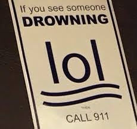
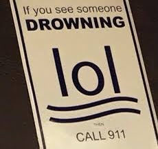

Proyecto Final - Entrega 3
| Nombre | Meme Favorito |
|---|---|
| Carla Cristina Aguilar Aceves |  |
| Santiago Alcérreca De la Viña |  |
| Aldo Turégano Montes |  |
| Nombre | Meme Favorito |
|---|---|
| Carla Cristina Aguilar Aceves | |
| Santiago Alcérreca De la Viña |  |
| Aldo Turégano Montes | |
La solución que encontramos a la problemática estipulada en las entregas 1 y 2 es inculcar los valores de tolerancia, diversidad e inclusión por medio de un videojuego usando distintos personajes animados llamados "Pelifrutis". Con esta solución, buscamos tener un alto alcance a los niños mexicanos de entre 4 y 8 años, y confiamos en tener el apoyo y confianza de los padres de familia.
OBJETIVOS: Estimular el trabajo en equipo, reconocimiento y aceptación de las diferencias, tolerancia a la frustración, igualdad y deconstrucción de estereotipos a través de las historias de los juegos y los personajes.
| Escenario | Descripción Detallada |
|---|---|
| Jugar | Al abrir la aplicación, el usuario decide crear una nueva "partida" para poder empezar a disfrutar del juego. Los personajes son presentados, y llega el momento de escoger el tuyo de un repertorio de seis Pelifrutis únicos.
Ahora, se escucha música leve pero alegre, y comienzan dinámicas entretenidas, cortas y simples, que ayudan al usuario a comprender un poco más acerca de la importancia de la inclusión y la no discriminación. |
| Jugar con amigos (multijugador) | |
| Ver rankings | |
| Reanudar partida | |
| Inicio de sesión | |
| Registro | |
| Perfil | |
| Tips / Hints |